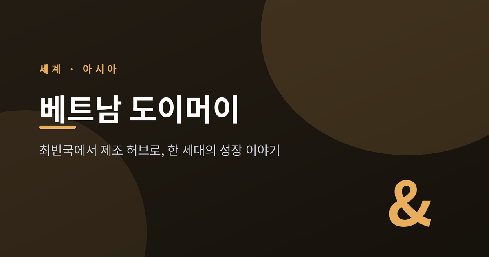
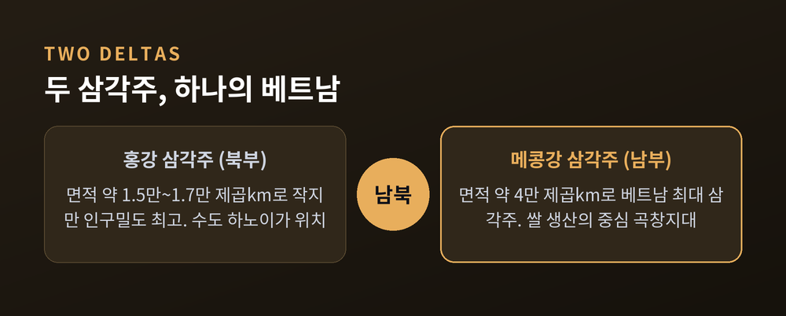
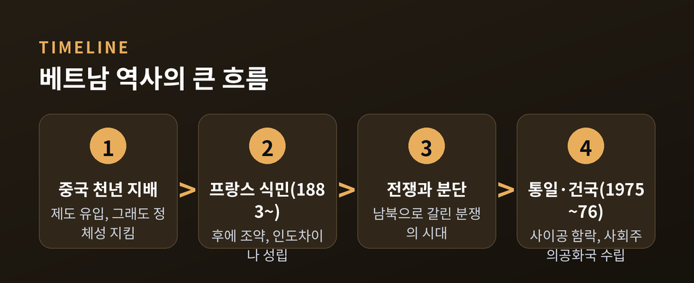
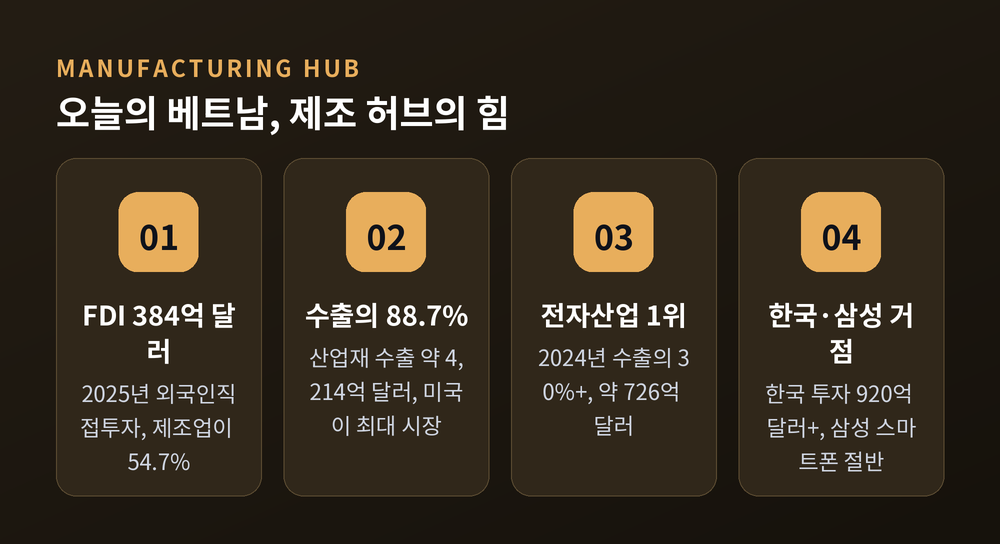
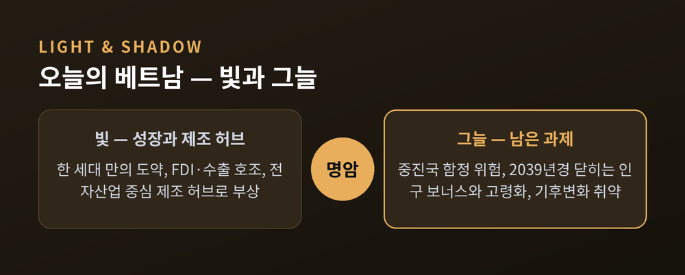

한 세대 만의 성장 이야기
오늘은 베트남의 성장 이야기를 정리해 보려 합니다.
1986년 도이머이(Đổi Mới) 개혁을 기점으로, 베트남은 세계 최빈국 중 하나에서 한 세대 만에 중진국으로 올라섰습니다.
지리에서 역사, 개혁, 그리고 오늘의 제조 허브까지 — 그 긴 흐름을 차근히 따라가 보겠습니다.
먼저 핵심부터 세 줄로 추려 둡니다.
첫째, 베트남은 1986년 인플레이션 700%의 붕괴 직전 경제에서 시장경제 개혁으로 방향을 틀었습니다.
둘째, 그 결과 GDP 규모는 1985년 약 141억 달러에서 2023년 약 4,297억 달러로 커졌습니다.
셋째, 오늘날 베트남은 글로벌 공급망 재편의 최대 수혜국 중 하나로, 제조업 허브로 떠올랐습니다.

베트남의 지리는 모양부터 특별합니다.
남북으로 길게 뻗은 S자 형태의 국토입니다.
최북단에서 최남단까지 길이가 약 1,650km, 가장 넓은 곳은 약 500km에 이릅니다.
그런데 중부의 가장 좁은 허리는 약 50km에 불과합니다.
이 길고 좁은 땅의 양 끝에 비옥한 삼각주가 하나씩 놓여 있습니다.
북쪽에는 홍강 삼각주가 있습니다.
면적은 약 15,000~16,700㎢로 넓지 않습니다.
그러나 베트남 모든 지역 중 인구와 인구밀도가 가장 높습니다.
수도 하노이가 바로 이 지역에 있습니다.
남쪽에는 메콩강 삼각주가 펼쳐집니다.
면적이 약 40,000㎢로 베트남 최대 삼각주입니다.
동남아를 관통해 흘러온 메콩강이 바다로 빠져나가는 곳이자, 베트남 쌀 생산의 중심인 곡창지대입니다.
두 삼각주 사이의 길고 좁은 중부를 따라 "통일 익스프레스" 철도가 달립니다.
천 년 역사의 북부와 남부를 잇는 이 축이 베트남의 지리적·역사적 척추인 셈입니다.

베트남의 역사는 외세와의 긴 줄다리기로 요약됩니다.
베트남은 1천 년 넘게 중국의 지배를 받았습니다.
그 기간 중국의 문화와 제도가 깊이 유입되었습니다.
그럼에도 베트남인들은 완전한 동화에 저항하며 고유한 민족 정체성을 지켜냈습니다.
근대에 들어서는 프랑스의 식민 지배가 이어졌습니다.
1883년 베트남 궁정이 후에 조약에 서명하며 북부와 중부가 프랑스 보호령이 되었습니다.
이후 프랑스가 베트남 전역을 장악해 프랑스령 인도차이나가 성립했습니다.
20세기 중반의 베트남 전쟁은 또 다른 비극이었습니다.
소련·중국이 지원한 북베트남과, 미국 및 동맹국이 지원한 남베트남 사이의 분쟁이었습니다.
통일이냐 영구 분단이냐를 두고 벌어진 싸움이었습니다.
1975년 4월 30일 사이공이 함락되며 통일이 현실이 되었습니다.
이어 1976년 7월 2일 베트남 사회주의공화국이 공식 수립되었습니다.
전쟁은 모든 당사자에게 깊은 상처를 남긴 비극이었습니다.
어느 한쪽을 탓하기보다, 역사적 사실로 담담히 기록해 둘 일이라고 생각합니다.

1986년 무렵의 베트남 경제는 붕괴 직전이었습니다.
인플레이션은 700%에 달했습니다.
농민은 굶주렸고, 하루 약 400만 달러에 이르는 소련 원조에 기대 간신히 버티는 상황이었습니다.
이때 시작된 것이 도이머이입니다.
"Đổi Mới"는 "쇄신·혁신"을 뜻합니다.
목표는 "사회주의 지향 시장경제"의 건설이었습니다.
공산당 일당 체제는 유지하되, 시장의 원리를 도입한 점진적 개혁개방이었습니다.
효과는 빠르게 나타났습니다.
GDP 성장률은 1985년 3.81%에서 1989년 7.36%로 올라섰습니다.
1990년부터 아시아 금융위기 전까지는 연평균 약 6.5%로 가속되었습니다.
구조 자체도 바뀌었습니다.
예전엔 농업이 중심이었습니다. 지금은 산업이 중심입니다.
1986~2005년 사이 GDP에서 농업 비중은 38%에서 19%로 내려갔습니다.
같은 기간 산업 비중은 2%에서 38%로 뛰어올랐습니다.
그 결과 베트남은 세계 최빈국 중 하나에서 한 세대 만에 중진국으로 변모했습니다.
GDP 규모는 1985년 약 141억 달러에서 2023년 약 4,297억 달러로 커졌습니다.
오늘날 베트남을 설명하는 한 단어는 "제조 허브"입니다.
글로벌 기업들이 중국 의존을 줄이고 생산을 다변화하는 흐름이 있습니다.
그 흐름 속에서 베트남은 리쇼어링 물결의 최대 수혜국 중 하나로 떠올랐습니다.
숫자가 이를 보여줍니다.
2025년 베트남의 외국인직접투자(FDI)는 약 384.2억 달러에 달했습니다.
이 중 제조업 부문이 약 210.1억 달러로 전체의 54.7%를 차지했습니다.
가공·산업 수출은 약 4,214.7억 달러로 전체 상품 수출의 88.7%였고, 미국이 최대 수출 시장이었습니다.
특히 전자산업이 베트남 최대 수출 부문입니다.
2024년 전체 수출의 30% 이상, 약 726억 달러를 전자산업이 책임졌습니다.
이 흐름에서 한국의 자리도 큽니다.
한국은 베트남의 최대 투자국 중 하나입니다.
2024년 말 기준 한국 기업은 1만여 개 프로젝트에 920억 달러 이상을 투자했습니다.
삼성은 베트남 최대 외국인 투자기업으로, 전 세계 스마트폰 생산의 약 절반을 베트남에서 만듭니다.

성장의 빛이 밝은 만큼, 그늘도 분명합니다.
아직 완벽한 그림은 아닙니다.
먼저 중진국 함정의 위험이 있습니다.
1인당 GDP가 일정 구간에서 성장이 둔화·정체되는 현상입니다.
1960년 중진국에 진입한 101개국 중 2008년까지 고소득국이 된 나라는 단 13개뿐이었습니다.
베트남도 이 함정을 비껴가야 하는 처지입니다.
인구 문제도 무겁습니다.
생산가능인구가 부양인구를 웃도는 "골든 인구"의 창이 2039년경 닫힐 것으로 전망됩니다.
노동력은 그 무렵을 지나며 정점을 찍을 것으로 보입니다.
빠른 고령화 속에서 "부자가 되기 전에 늙는" 위험이 거론됩니다.
기후변화 취약성도 빼놓을 수 없습니다.
세계은행은 강력한 대응이 없으면 2050년까지 매년 GDP의 12~14.5%를 잃을 수 있다고 경고했습니다.
베트남은 이에 맞서 2050년 탄소중립을 약속했습니다.

정리하면 이렇습니다.
베트남의 이야기는 지리가 깔아둔 무대 위에서, 역사의 상처를 딛고, 개혁으로 방향을 튼 한 나라의 기록입니다.
— "한 세대 만에 최빈국에서 제조 허브로."
그 도약이 중진국의 벽과 고령화, 기후의 시험까지 넘어설 수 있을지 묻는다면, 지금의 베트남은 그 답을 써 내려가는 중이라고 답하겠습니다.